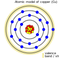
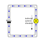
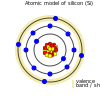
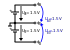
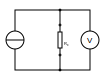

Als ich just dabei war, den Implementierungsteil der Booleschen Algebra zu schreiben, die grundlegenden logischen Gatter, lief der Schreibprozess schnell aus dem Ruder und ich ertappte mich dabei, dass ich mehr über weniger zusammenhängende Themen schrieb Themen zu schreiben, wie z.B. die Erläuterung grundlegender elektronischer Komponenten und deren Implementierung auf Silizium, als über den eigentlichen Inhalt, hier soll der Platz für diese Ausflüge sein. Dies soll kein vollständiges Nachschlagewerk sein, eher eine Ergänzung zu bestehenden Literatur.
Freie Elektronen und elektrischer Strom
Was ist Elektrizität? Grob gesagt ist es der Fluss von Elektronen in einem Leiter. Laienhaft ausgedrückt kann man sagen, Elektronen auf der äußeren Schale - auch Valenzband genannt - eines Atoms hüpfen vom Valenzband eines Atoms zum Nachbaratom. Elektrizität ist also im Wesentlichen die Bewegung von Elektronen durch Materie. In der praktischen Anwendung ist diese Materie ein Stromkreis, aber auch zum Beispiel die Blitzentladung auftritt, in diesem Fall kann die ionisierte Luft als (Kurz-)Stromkreis betrachtet werden.
Wir gehen atomar vor: Leitende Elemente…
Die erste Gruppe von Elementen (oder Verbindungen), die wir hier vorstellen werden, sind die Leiter. Einige wichtige Vertreter dieser Gruppe sind die Elemente Aluminium und Kupfer die beide für elektrische Übertragungsleitungen und Stromnetze unverzichtbar sind. Wie die folgende Tabelle zeigt, verfügen beide Elemente über freie Elektronen auf ihrer Valenz Valenzschale freie Elektronen, die, wie oben beschrieben, benötigt werden, um den Elektronenwechsel von einem Atom zum anderen zu ermöglichen von einem Atom zum anderen und damit die Bewegung von Elektronen zu ermöglichen, was das Element (in seiner reinen Form) zu einem Leiter macht.
Natürlich gibt es in der realen Welt mehrere Faktoren, die den hier vorgeschlagenen idealisierten Eigenschaften entgegenwirken hier vorgeschlagenen Eigenschaften entgegenwirken. So müssen wir unter anderem berücksichtigen, dass Metalle oxidieren, wenn sie mit Sauerstoff in Kontakt kommen mit Sauerstoff oxidieren, wodurch sich eine dünne, aber effektiv isolierende Schicht auf der Oberfläche des Metalls bildet, die einen guten Kontakt verhindert. Auf solche Effekte können wir später eingehen. Lassen Sie uns jetzt einfach mit dem Thema weitermachen…
conductor |
|
|
 |
atomic model of aluminium (13) |
atomic model of copper (28) |
valence shell / free electron(s): 3 (3) |
valence shell / free electron(s): 1 (1) |


\large \[Q = N \cdot (\pm e)\]
\large \[I = \frac{\Delta Q }{\Delta t}\]
…und nicht so leitfähig
Die zweite Gruppe von Elementen, die wir hier vorstellen wollen, sind Elemente, deren Leitfähigkeit (stark) von ihrem Reinheitsgrad und von Umgebungs Faktoren wie Temperatur abhängt. Die Vertreter dieser Gruppe werden als Halbleiter bezeichnet. Kohlenstoff und Silizium sind Beispiele, die im Periodensystem auftauchen. Der Autor hat diese beiden Elemente ausgewählt, da sie sehr interessante Eigenschaften haben in Bezug auf - aber nicht nur - die Leitfähigkeit. Dies ist auf die Anzahl der Valenzelektronen Elektronen auf der äußeren Schale.
semiconductor |
|
|
 |
atomic model of carbon (6) |
atomic model of silicon (14) |
valence shell / free electron(s): 4 (0) |
valence shell / free electron(s): 4 (0) |

Warum also haben Kohlenstoff und Silizium trotz ihrer vier Elektronen auf der Valenzschale so schlechte Leitfähigkeitseigenschaften im Vergleich zu Kupfer -trotz seiner vier Elektronen auf der Valenzschale?
Die Antwort liegt in der einfachen Tatsache, dass sowohl Kohlenstoff als auch Silizium ein Gitter bilden, das alle Elektronen der Valenzschale verbraucht. schale.
covalent bonding of carbon |
covalent bonding of silicon |
|
|
semiconductor |
|


Spannung und Potential
Die folgende Tabelle zeigt die gebräuchlichen Symbole für Spannungsquellen. Auf der linken Seite ist eine ideale Spannungsquelle dargestellt, während auf der rechten Seite eine reale Spannungsquelle abgebildet ist. Wie Sie sehen können, ähnelt die reale Quelle einer Batteriezelle. Natürlich kann die Spannungsquelle von einer tatsächlichen Batteriezelle abweichen und wird auch meist nicht implizit dargestellt.
ideal voltage source |
real voltage source |
|
|


Eine ideale Spannungsquelle liefert eine Spannung mit einem bestimmten Wert.
Wie wir in den unten gezeigten Schaltplänen sehen können, ist eine Spannung einfach die Differenz zwischen zwei Potentialen. Im ersten Beispiel (links) ist der untere Knotenpunkt als Bezugspunkt gewählt, da er als Masse signalisiert wird. Die Spannung beträgt also 1,5 V für U_B0 bzw. 3 V für U_A0. Im Beispiel rechts hingegen wird der Übergang zwischen den Batteriezellen als Bezugspunkt und Masse gewählt. Die Potentialdifferenzen, die wir hier messen, sind: U_A0 = 1,5V und U_B0 =-1,5V. Als Anmerkung: Solche Doppelstromversorgungen - allerdings mit einem Spannungsbereich von 12…15V - werden häufig für Anwendungen mit Operationsverstärkern verwendet.
Single power supply |
Dual power supply |
|
 |

\large \[U = \phi_{1} - \phi_{0}\]
Das nächste Bild zeigt die einfachste mögliche Schaltung: Eine Spannungsquelle mit einem Widerstand in Reihe. Physikalisch gesehen ist jeder Widerstand nur ein Wandler von elektrischer Energie in thermische Energie, also Wärme.
Widerstände werden in der Regel in Schaltungen verwendet, um die Spannung auf den gewünschten Wert abzusenken bzw. den Strom, der zwischen bestimmten Pfaden einer Schaltung fließt, zu begrenzen. Wir werden im nächsten Abschnitt mehr darüber erfahren.

Ohmsches Gesetz und Leitungswiderstand
Übung: Widerstand messen Zur Durchführung der folgenden Übung benötigen Sie ein Spannungs- und ein Amperemeter (oder einfach zwei Multimeter), eine variable Spannungsquelle und einige Probedrähte aus verschiedenen Materialien, jedoch mit gleicher Länge und gleichem Durchmesser. Wenn Sie nicht über die entsprechenden Geräte verfügen, können Sie diese Übung theoretisch auch in Qucs oder LTspice simulieren.
Da wir aber im Voraus die Parameter der zu messenden Probedrähte festlegen müssen messen wollen, torpediert dieser Ansatz gewissermaßen den Zweck der Übung, nämlich zu lernen, wie man eine indirekte Messung des elektrischen Widerstandes durchführt.
Schließen Sie die Geräte wie in der Abbildung unten dargestellt an, wobei der Probedraht den Widerstand Rx darstellt.

Messen Sie nun für jeden Draht die Spannung und den Strom und zeichnen Sie ein Diagramm mit der Spannung auf der x-Achse und dem Strom auf der y-Achse. Du wirst sehen, dass du für verschiedene Materialien einen linearen Graphen erhältst, aber mit einer unterschiedlichen Steigung. Sie haben also eine Beziehung gefunden zwischen Spannung, Strom und Widerstand gefunden! Nachdem du die verschiedenen Drähte gemessen hast, kannst du auch Stift und Papier verwenden: Zeichne eine Linie mit Bleistift eine Linie ziehen oder eine kleine Fläche kritzeln. Verbinden Sie diese nun mit den Sonden der Messanordnung. Sie werden sehen, dass auch die Graphitspur wie ein Leiter wirkt - nicht optimal, aber ein Leiter.
Diese Beobachtung führt uns zu der wichtigsten Formel, die Ihnen in einem Elektrotechnikkurs 101 begegnen wird, dem Ohmschen Gesetz.
[„latex“,„../images/electronic_basics/ohms_law.svg“ ,imgfmt=„svg“] \groß \[ R [\Omega] = \frac{U [V]}{I [A]}\]
Wenn wir diese Gleichung in ihre einfacher zu interpretierende Form umstellen, U = R*I, erkennen wir, dass der Spannungsabfall (U) am Widerstand dem Widerstandswert ( R) mal dem durchfließenden Strom (I) entspricht. Wir haben noch nicht über den Strom gesprochen und werden dies auf einen späteren Abschnitt verschieben. Wie in den Bremsen angegeben, ist die Einheit des Widerstands Ω.
In der folgenden Abbildung sind die Regeln für die Reihen- und Parallelschaltung von Widerständen dargestellt.
Bei der Reihenschaltung addieren sich die Werte einfach, wie wir es schon bei den Spannungsquellen gesehen haben, während für die Parallelschaltung dasselbe gilt, allerdings für den Leitwert G, der der Kehrwert des Widerstands R ist und in S(iemens) gemessen wird.
Wir haben also herausgefunden, dass sich die Materialien in ihrer elektrischen Leitfähigkeit - die der Kehrwert des elektrischen Widerstands ist - unterscheiden. Einige sind gut (Leiter), einige sind ziemlich schlecht und unbrauchbar (Nichtleiter), aber dennoch nützlich als Dielektrikum, wie wir im nächsten Abschnitt sehen werden. im nächsten Abschnitt sehen werden, und einige dazwischen. Wir müssen natürlich auch beachten, dass die Leitfähigkeit nicht nur vom Material selbst, sondern auch von seiner Geometrie abhängt (außerdem ist sie von der Temperatur abhängig, aber darauf gehe ich hier nicht ein), Sie wissen ja, dass wir uns mit Physik beschäftigen. in diesem Zusammenhang ist die folgende Formel von interesse:
[„latex“,„../images/electronic_basics/wire_resistance.svg“ ,imgfmt=„svg“] \large \[ R = \frac{\rho L}{A}\]
Für die gebräuchlichste Rechteckform - wie ein Leiterstreifen auf einer Leiterplatte - ergibt sich die Fläche A aus Breite mal Höhe
[„latex“,„../images/electronic_basics/strip_resistance.svg“ ,imgfmt=„svg“] \large \[ R = \frac{\rho L}{A} = \frac{\rho L}{w \cdot h}\]
Der Gesamtwiderstand eines Drahtes oder einer Leiterbahn auf einer Leiterplatte ist also abhängig vom spezifischen Widerstand ρ, der Länge des Leiters und der Fläche, die zur Übertragung des Stroms verwendet wird. Logischerweise erhöht sowohl der spezifische Widerstand als auch die Länge des Leiters den Widerstand erhöhen, während die Fläche dem entgegenwirkt.
Warum müssen wir das wissen?
An dieser Stelle werden Sie sich vielleicht fragen, warum es wichtig ist, dies zu wissen, wenn wir einfach einen Schaltplan unseres Heimwerkerprojekts erstellen und es mit diskreten Bauteilen auf einem Breakout-Board realisieren können - die Antwort ist ganz einfach die Skalierung - für dieses einfache Bastlerbeispiel mag das funktionieren, aber es fehlt die Skalierbarkeit, die Kosten und/oder die Zuverlässigkeit.
Je weiter wir in der Skala nach unten gehen, desto wichtiger werden parasitäre Effekte - wir werden in den folgenden Abschnitten mehr darüber erfahren.
Widerstandsmessung
Die folgende Abbildung zeigt das Prinzip der Widerstandsmessung mit einem Digitalmultimeter - abgesehen vom Bereichsschalter. Auf der linken Seite haben wir eine Konstantstromquelle, in der Mitte den zu messenden Widerstand - oder Draht - und auf der linken Seite ein Voltmeter, das die Spannung misst. Wie bei der Konstantstromquelle ist der Gesamtstrom im Stromkreis bekannt, der Widerstand kann daraus mit der gemessenen Spannung skaliert werden.

Der Widerstand
Das elektrische Bauteil selbst gibt es in allen Formen und Größen, je nach Anwendungsbereich. der Miniaturwiderstand für die Aufbautechnik, der in allen höher integrierten elektronischen Geräten verwendet wird, der durchschnittliche 1/4-Watt-Widerstand auf Kohlebasis mit 5 Prozent Toleranz (im Bild unten mittig dargestellt) und die präziseren Metallfilmwiderstände mit 1 % Toleranz (blau, rechts im Bild). Es gibt Widerstände mit mechanisch einstellbarem Widerstand, die Potentiometer genannt werden (wie die links im Bild gezeigten). Andere Typen sind Varistoren, bei denen der Widerstand von der angelegten Spannung abhängt, und einige andere Typen wie NTC / PTC in Abhängigkeit von der Temperatur.


////Erklärung des Aufbaus und der Konstruktion von SMD-Widerständen////
Aus dem englischen übersetzt mit deepl.